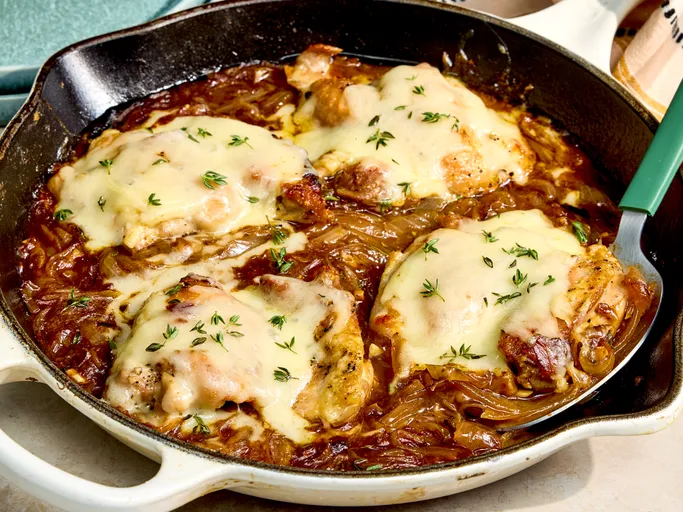

Skillet French Onion Chicken

Home
Description
This skillet French onion chicken is a flavorful and comforting dish that combines tender chicken breasts with caramelized onions and a rich, savory sauce. It's perfect for a weeknight dinner or a special occasion.
Ingredients
- 4 boneless, skinless chicken breasts
- 2 large onions, thinly sliced
- 2 tablespoons olive oil
- 1 teaspoon salt
- 1/2 teaspoon black pepper
- 1 teaspoon garlic powder
- 1/2 cup chicken broth
- 1/4 cup balsamic vinegar
- 1/4 cup grated Parmesan cheese
- Fresh thyme or parsley for garnish (optional)
Instructions
- Season the chicken breasts with salt, pepper, and garlic powder.
- In a large skillet, heat the olive oil over medium heat. Add the sliced onions and cook, stirring occasionally, until they are caramelized and golden brown, about 15-20 minutes.
- Remove the caramelized onions from the skillet and set them aside.
- In the same skillet, add the chicken breasts and cook for 5-7 minutes on each side, or until they are cooked through and golden brown. Remove the chicken from the skillet and set it aside.
- Deglaze the skillet with chicken broth and balsamic vinegar, scraping up any browned bits from the bottom of the pan. Let the sauce simmer for 2-3 minutes until it thickens slightly.
- Return the caramelized onions and chicken breasts to the skillet, spooning some of the sauce over the chicken. Sprinkle with grated Parmesan cheese and cook for an additional 2-3 minutes until the cheese is melted and the chicken is heated through.
- Garnish with fresh thyme or parsley if desired, and serve hot.
Thank you!